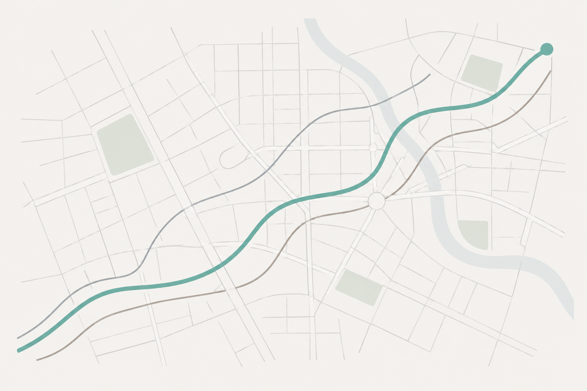

Every navigator.
One best route.
Worldwide
Type any trip on earth. The app asks every free routing engine at once, ranks the answers, and names the route worth taking.

Routes computed on OpenStreetMap data - global coverage.
Plan a route
Live engines: OSRM, Valhalla, BRouter. Free, no signup, all driving.
Recommended: quickest, unless another route is within two minutes with fewer turns and less distance. Turn counts come from each engine; BRouter reports none.
The routes
Route shapes as each engine draws them, recommended in teal. Schematic view, no base map.
Waze and Apple keep theirs closed
Waze and Apple Maps do not share routes with any app - so these open their apps with your trip already typed in. Comparing them is one tap.
While you drive
Keep the app watching mid-drive: it rechecks every engine from your GPS position every 2 minutes, and if a clearly better route appears (3+ minutes) it tells you - on screen, and out loud if you want. Switching navigation app is one tap.
Phones pause web pages that are not on screen. Keep this page open while you drive - if you leave it, the watching pauses until you come back.
More engines on the way
Google, HERE, TomTom, OpenRouteService and GraphHopper each plug in with one API key - the app is built so adding an engine changes nothing else. Small regional services (Gaode in China, Kakao in Korea, Yandex, Mapy.cz and more) slot in the same way. They get switched on one by one.